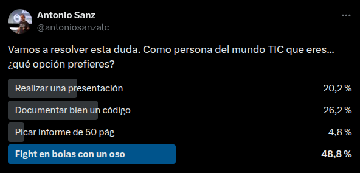

2.5. Cómo escribir informes técnicos de seguridad¶
Los informes técnicos son una parte fundamental del trabajo en el ámbito de la tecnología y la seguridad informática. La capacidad de comunicar de manera clara y efectiva los hallazgos, análisis y recomendaciones es clave para el éxito de cualquier proyecto o investigación. En esta sección, exploraremos cómo escribir informes técnicos de alta calidad, centrándonos en aspectos clave como la estructura, el estilo y las mejores prácticas para la presentación de incidentes de seguridad. A lo largo de esta guía, proporcionaremos consejos prácticos y ejemplos para ayudarte a mejorar tus habilidades de redacción técnica y asegurar que tus informes sean comprensibles, concisos y persuasivos.
1. Introducción¶
¡En esta vida hay cosas que nunca nos apetece hacer: bajar la basura, hacer dieta, una colonoscopia un lunes en ayunas… En el mundo TIC esos “no apetece” son a veces ligeramente diferentes. Sería realmente curioso saber los resultados de esta encuesta.
Elige por orden de preferencia las siguientes actividades:
- Realizar una presentación ante tu jefe y el jefe de tu jefe.
- Documentar con detalle un código/sistema que estás a punto de desplegar.
- Realizar un informe técnico de 50+ páginas.
- Pelear en pelotas contra un oso armado con un mondadientes.
https://twitter.com/antoniosanzalc/status/1097412382517800960

En muchos casos el personal técnico es justamente eso: técnico. No vamos a entrar en el cliché de “toda la gente que trabaja en tecnología son unos frikis”, pero sí que hay que reconocer que a los técnicos nos suele gustar más cacharrear, desarrollar, crear cosas… que tener que contarlas.
Existe, sin embargo, una cruda realidad; la calidad de vuestro trabajo va a ser el máximo de dos factores: vuestra capacidad técnica REAL y vuestra capacidad técnica PERCIBIDA. Es decir, podéis ser técnicamente excelentes, pero si vuestros jefes no perciben esa calidad… es un problema. Una presentación, una documentación o un informe son en realidad una extensión de vuestras capacidades, y de ahí la necesidad de desarrollarlas como medio de avance profesional.
El cómo presentar dignamente merecería recomendar varios recursos de calidad:
- Presentaciones artesanas: Tienen un par de libros estupendos, y un mini curso en SlideShare que es oro puro. Altamente recomendables.
- El arte de presentar: Tienen unos cursos presenciales de cómo hacer presentaciones excelentes, y un libro avanzado espectacular.
- Nancy Duarte: Es una jefa de las presentaciones. Sus libros Slide:ology, Resonate e Illuminate son la santísima trinidad sajona de cómo hacer presentaciones like a boss.
La documentación de código/sistemas es un ámbito a veces tan específico que no tenemos recursos sólidos que recomendaros.
Pasemos entonces a cómo realizar informes técnicos, tarea para la cual hemos recopilado una buena cantidad de consejos y trucos, estructurados en cuatro categorías:
- Consejos estratégicos: notas de alto nivel sobre cómo afrontar crear un informe técnico.
- Consejos de estructura: cómo estructurar tu informe técnico.
- Consejos de redacción: cómo redactar tu informe técnico de forma profesional.
- Consejos espirituales: un pequeño cajón de sastre sobre cómo mejorar tus capacidades.
Es obligatorio dar el mérito correspondiente a Lenny Zeltser (@LennyZeltser), que con su cheatsheet de consejos sobre cómo escribir informes (que compartimos al 95%) han ayudado a cristalizar este HowTo (y dicho sea de paso, tiene unos materiales sobre análisis de malware excelentes). Dicho esto, si tienes tu procesador de texto favorito abierto, tu CPU sin carga y un buen café… ¡empezamos!
2. Cómo escribir informes técnicos y no morir en el intento¶
2.1. Consejos estratégicos¶
Orientados a la estrategia general de creación del informe.
2.1.1. Determina los objetivos del informe¶
Lo primero que debes hacer cuando escribes un informe técnico es determinar su función: qué es lo que queremos conseguir con el mismo, cuáles son los objetivos a alcanzar.
Puede ser explicar un incidente de seguridad (profundizaremos más en esa subcategoría), realizar un análisis de pros y contras de una tecnología o algo tan simple como mostrar el estado de un proyecto.
Sea cual sea, tienes que ser capaz de condensar el objetivo del informe en una línea de texto, y usar esa línea de texto como una regla básica en la redacción del documento: si lo que escribes no está directamente alineado con esos objetivos, probablemente no sea necesario.
Ejemplos
- Definir la respuesta llevada a cabo respecto al incidente de seguridad PI-0023.
- Establecer los requisitos de seguridad de la arquitectura de XXX.
- Decidir si emplear la tecnología X o Y en el proyecto Z.
Consejo 1
Define el objetivo del informe; Concrétalo para que ocupe una línea de texto.
2.1.2. Identifica a tu audiencia¶
Casi tan importante como saber lo que tienes que contar es conocer a quién se lo tienes que contar. Nuestros informes pueden estar dirigidos a diversos tipos de perfiles, y cada uno tiene su propia cultura y necesidades. Saber identificar el destinatario de nuestro informe y adaptar nuestro mensaje al mismo hará que llegue más fácil e incrementará su eficacia.
Ejemplos
- Técnicos: querrán más detalles técnicos, y se fijarán más en la solidez de las decisiones técnicas tomadas.
- Directivos: querrán más detalles de todo relacionado con costes y plazos, y se centrarán en las ventajas competitivas.
- Legal: querrán más detalles de posibles normativas/leyes implicadas, y se centrarán en las posibles consecuencias legales del informe.
Consejo 2
Identifica quiénes va a leer tu informe, y redacta el documento con ello en mente.
2.1.3. KISS (Keep it Simple, Stupid)¶
Este es un consejo de doble filo: en algunas organizaciones se valora la calidad de un informe y el trabajo que ha costado en función de las páginas que ocupa (lo que se llama cariñosamente “calificar el informe al peso”).
Sin embargo, la realidad es que muchos jefes no quieren (ni tampoco tienen tiempo) de leerse 200 páginas de prosa rimbombante con abundante relleno que engorda el informe cual pienso para un cochino. ¿Para qué sí que van a tener tiempo? Para leerse un informe de 20 páginas en el que se explique de forma clara y concisa el objeto del informe.
Ejemplo: Informe de un incidente dirigido al responsable de seguridad (v1)
Los atacantes hicieron uso de una vulnerabilidad 0-day (fallo de seguridad no reconocido por el fabricante para el que no hay parche conocido) para realizar un ataque de DDoS (Distributed Denial of Service, ataque de denegación de servicio distribuida) para agotar los recursos de CPU de los 16 frontales web del cluster de VMWare PEPITO (situado en las instalaciones de Mordor, Carretera Lorien 21), obligando a los técnicos a realizar un esfuerzo adicional y entrar por la VPN SSL ofrecida por el software F35-B en su versión 2.2.2.1 para realizar un inventario pormenorizado del estado de los servidores y reiniciar mediante IPMI los servidores 2,3 y 5.
En este caso la audiencia es un perfil técnico: si tenéis que explicarle al CISO de vuestra organización qué es un DDoS o un 0-day, estamos buenos. Y a menos que la versión de VPN empleada tenga algo que ver con el incidente, tampoco es necesario incluirla (en todo caso, iría en los anexos como veremos cuando hablemos de cómo estructurar un informe).
Ejemplo: Informe de un incidente dirigido al responsable de seguridad (v2)
Los atacantes emplearon un 0-day para realizar un DDoS contra los frontales web del clúster PEPITO. Los técnicos tuvieron que reiniciar los servidores 2,3 y 5.
Como veis, si vamos al grano y nos centramos en lo importante pasamos de 8 líneas a 2. Ahorramos tiempo en la redacción del informe, hacemos felices a nuestros jefes y salvamos árboles del Amazonas (por desgracia, a día de hoy todavía se imprimen muchos documentos)
Consejo 3
Sé conciso y claro. Si crees que algo no hace falta, elimínalo o muévelo a los anexos.
2.1.4. Ofrece valor¶
Todo informe realizado debe aportar algo que ayude a resolver el problema presente. Analiza el contenido de tu informe y pregúntate: ¿Qué valor estoy aportando con este documento? Es muy importante identificar el valor que aportamos con ese documento y resaltarlo debidamente en los lugares adecuados (resumen ejecutivo, conclusiones, etc…)
Ejemplo
La optimización de las reglas YARA en función de su tasa de falsos positivos y su necesidad real ha permitido eliminar 100 reglas, reduciendo en un 20% la tasa de falsos positivos de la plataforma de seguridad.
Consejo 4
Identifica el valor aportado en tu documento y dale visibilidad.
2.2. Consejos de estructura¶
Orientados a la estructura del informe.
2.2.1. Define una estructura base¶
Si tu informe tiene una buena estructura va a ser mucho más fácil de redactar, y sobre todo de leer (recuerda que nuestro objetivo es el éxito del informe, así que toda ayuda es bienvenida). Una estructura básica válida para prácticamente cualquier tipo de documento podría ser esta:
- Resumen ejecutivo: es tan importante que tiene apartado propio
- Objeto y alcance: cuál es el objetivo del documento y hasta dónde vamos a llegar
- Antecedentes y consideraciones preliminares: todo aquello que debería conocerse de forma previa a la lectura de este informe
- Análisis: describir el trabajo realizado objeto del informe
- Conclusiones: a qué conclusiones llegamos con los análisis realizados.
- Anexos: toda la información adicional que queramos incluir
Consejo 5
Define una estructura base para tu contenido.
2.2.2. Define el resto de puntos del informe creando un índice¶
Una vez completada la estructura base, lo siguiente que tienes que hacer es pensar en cómo vas a estructurar el resto del documento. Una técnica excelente es la de “completa el índice”: crea el resto de puntos del documento y crea un índice vacío dentro de tu procesador de textos.
Puede parecer una tontería, pero una técnica muy efectiva para evaluar libros técnicos es a través de su índice: con un poco de práctica, de un vistazo puedes saber si un libro te puede interesar o no… y lo mismo sucede con muchos informes. El tener un buen índice ayuda a los lectores a localizar las partes que les interesan, y a vosotros a la hora de redactarlo ya que al final ya sabéis dónde tenéis que poner cada cosa, y tan solo es cuestión de ir “rellenando” los huecos.
Ejemplo (auditoria de seguridad)
- Resumen ejecutivo
-
Objeto y alcance
- Sistemas a auditar
- Sistemas expresamente fuera del alcance
-
Antecedentes y consideraciones preliminares
Personal de contacto de cada entidad
* Reglas particulares de la auditoría
* Fechas de realización de la auditoría -
Resultados de la auditoría
Sistema A: vulnerabilidades graves y muy graves
* Sistema A: vulnerabilidades medias
* Sistema A: vulnerabilidades leves
* Sistema B: vulnerabilidades graves y muy graves
* Sistema B: vulnerabilidades medias
* Sistema B: vulnerabilidades leves -
Conclusiones
- Anexo A: Listado de vulnerabilidades detallado
-
Anexo B: Evidencias de los análisis realizados
- Sistema A
- Sistema B
Consejo
Crea un índice completo para tu documento. Haz que sea claro y limpio.
2.2.3. El resumen ejecutivo es tu mejor amigo¶
Este es el punto más importante de todo vuestro informe porque en algunos casos (por desgracia) es lo único que va a ser leído. Esto obliga a que el resumen ejecutivo sea posiblemente la parte del documento que tengáis que cuidar con más cariño.
Un buen resumen ejecutivo NUNCA tendría que ocupar más de una carilla de un A4 a letra normal (el mismo nombre lo dice, es un resumen para los jefes), y tendría que ser leído en menos de dos minutos.
Así mismo, un resumen ejecutivo tendría que tener un lenguaje extremadamente claro, huyendo siempre de terminología técnica (recuerda la audiencia, probablemente no serán técnicos). Aunque parezca algo drástico, yo siempre propongo la técnica del “niño de 6 años”: si vuestro informe no puede ser entendido sin problemas por un niño de 6 años, es que no es lo suficientemente claro.
¿Qué tendría que contener un buen resumen ejecutivo? Grosso modo, estos tres elementos:
- Problema objeto del informe.
- Solución propuesta.
- Acciones tomadas (o que deben tomarse) para alcanzar esa solución.
Y nada más. El resumen ejecutivo debería de ser un ejercicio de minimalismo brutalista: si en lugar de una carilla podéis emplear media, mejor.
Consejo 7
Una carilla (o menos) en lenguaje claro identificando problema y soluciones tomadas constituyen un excelente resumen ejecutivo.
2.2.4. Los anexos son el trastero de tu informe¶
Uno de los errores más comunes cuando se realizan informes es la saturación de información. Nos hemos pegado una currada con el análisis del problema, y queremos que se note: listados de evidencias, capturas de pantalla, salidas de programas por comandos… todo tiene que estar reflejado en el informe para que se vea el trabajo que nos ha costado.
Error. Un listado sin fin de datos “porque sí” lo único que hace es producir fatiga cognitiva al lector, y dificulta en muchos casos la lectura del informe. Cuando tienes 600 páginas de informe, (y hemos visto algunos así), la simple navegación a lo largo del mismo es un infierno.
Estos elementos son muy interesantes a la hora de redactar un informe, ya que ayudan a defender nuestros análisis y conclusiones. Sin embargo, antes de incluirlos debes preguntarte: ¿son realmente necesarios? ¿Puedo usar un recorte del mismo?
La técnica del recorte (en la que se muestra únicamente parte de la evidencia recogida) es muy útil ya que nos permite centrarnos en lo importante. Por ejemplo, en una salida de una herramienta de port scanning de 5 páginas nos quedamos únicamente con las 4 líneas en las que aparece el puerto del servicio vulnerable.
El resto de la información tiene que estar incluida dentro del documento, principalmente por temas de verificabilidad del trabajo realizado, pero puede perfectamente ir como un anexo. De esta forma cualquiera que esté interesado puede ver la salida en bruto del comando, el subinforme completo de la herramienta X, etc… sin comprometer la legibilidad del texto.
Consejo 8
Todo lo que no sea realmente importante debe ir en los anexos del informe.
2.2.5. Haz de tu informe una plantilla¶
Antes de hacer un tipo de informe predeterminado, pregunta a quien tengas cerca si hay ya una plantilla hecha (es posible que ya exista, lo que te puede ahorrar mucho trabajo). En caso contrario, construye tu estructura, déjalo bonito… y convierte tu informe en una plantilla.
El motivo es claro: tal y como los programadores reusan código y los administradores de tareas automatizan tareas con scripts, tú también puedes reusar documentos. Un esfuerzo extra a la hora de hacer el primer documento tipo de un aspecto de tu trabajo para dejarlo perfecto hará que el resto de documentos sea “coger y rellenar plantilla”.
Consejo 9
Crea plantillas reutilizables para ahorrar tiempo.
2.2.6. Huye de los múltiples niveles anidados.¶
Hemos visto cosas que vosotros no creeríais. Atacar sangrías de texto en llamas más allá de Orion. Hemos visto estilos de texto infames brillar en la oscuridad, cerca de la puerta de Tannhäuser. Todos esos momentos se perderán en el tiempo como niveles 1.3.1.2.2.1.1 en tu informe técnico.
Bladerunner aparte, el consejo está claro: un informe que llega al 1.3.1.2.2.1.1 no es un informe, es tortura no tipificada por los DD.HH. Una estructura bizantina de subniveles, lo único que va a conseguir es confundir al lector y hacer que se pierda mientras intenta comprender tu documento.
En la mayoría de los casos la “regla del tres” funciona perfectamente: no más de 3 niveles de anidado en los títulos, ya que es un compromiso adecuado entre funcionalidad y legibilidad.
Consejo 10
Limita a 3 los subniveles de tu informe para no perder a tu audiencia.
2.2.7. [Advanced] – Convierte tu informe en un recortable¶
Si tu informe va a ser leído por personas con responsabilidades distintas (por ejemplo: sistemas, redes y seguridad) el estructurar tu informe para que sea fácilmente “recortable” puede facilitar muchísimo la vida a quien tenga que gestionar tu informe ya que puede darle a cada cual únicamente la parte del documento que le corresponde.
Por ejemplo, en una auditoria de seguridad en la que se auditan sistemas propios, sistemas alojados en un ISP y un combo de cortafuegos/WAF/IDS, puedes estructurar el informe de forma que sean tres “mini informes” y que simplemente cortando las páginas cada parte puede tener la información que necesita.
A veces es complicado, pero si lo consigues serás adorado por ello.
Consejo 11
Haz que tu informe sea fácilmente divisible.
2.3. Consejos de redacción¶
Orientados a la redacción del informe. Consejos prácticos para mejorar la calidad del texto.
2.3.1. El corrector ortográfico no cuesta dinero¶
Tenemos que reconocer que da un poco de vergüenza tener que poner este consejo, pero la cruda realidad obliga: pasar el corrector ortográfico es OBLIGATORIO en todo documento sobre el que tengáis la mínima autoría.
Hay pocas cosas que destruyan más rápidamente un informe que ver un “vamos haber las fases” o un “llendo a las conclusiones”. Pasar un corrector ortográfico cuesta muy poco y te puede salvar de fallos épicos.
Uno de los problemas cuando escribimos informes técnicos reside en que el procesador de texto no reconoce nuestra terminología (ni tampoco los términos en inglés). Un consejo muy interesante es el de ir añadiendo poco a poco estas palabras al diccionario personal de vuestro usuario, de modo que no se vuelvan a mostrar en siguientes ocasiones. De esta forma, cualquier falta de ortografía saltará a la vista y será más fácil de corregir.
Consejo 12
Guarda 10 minutos para pasar el corrector ortográfico. Hazlo SIEMPRE.
2.3.2. Cuidado con las frases largas¶
Otro de los problemas principales que solemos encontrar en la lectura de informes técnicos es la longitud de las frases. Hemos encontrado en más de una ocasión frases de 8 líneas cuya digestión era peor que la de un cachopo de kilo y medio.
Veamos un ejemplo ficticio (pero muy parecido a la realidad):
Los atacantes emplearon un ataque de spear-phishing contra varios altos cargos de la Organización con un documento malicioso que cuando se abría solicitaba la activación de macros y al aceptarse lanzaba un Powershell que contactaba con el C2 y se descarga la siguiente fase del malware que intentaba robar credenciales, se instalaba como servicio e intentaba escalar privilegios con la vulnerabilidad CVE-2019-001.
La solución mágica en muchos casos es el uso indiscriminado de comas. Una “mejora” del ejemplo anterior:
Los atacantes emplearon un ataque de spear-phishing contra varios altos cargos de la Organización, con un documento malicioso que cuando se abría solicitaba la activación de macros, y al aceptarse lanzaba un Powershell, que contactaba con el C2 y se descarga la siguiente fase del malware, que intentaba robar credenciales, se instalaba como servicio e intentaba escalar privilegios, con la vulnerabilidad CVE-2019-001.
Cada vez que tenemos que corregir alguno de estos, el consejo es el mismo: coge aliento e intenta decir esta frase de un tirón. En cuanto se dan cuenta de que en muchos casos es imposible, se vuelven conscientes del exceso cometido. Mano de santo, oiga.
La solución es muy simple: cualquier frase que no puedas decir sin respirar tiene que ser dividida en dos o más frases (en realidad, tendrías que tener una buena excusa para una frase de más de tres líneas). Veamos el ejemplo inicial dignamente redactado:
Los atacantes emplearon un ataque de spear-phishing contra varios altos cargos de la Organización. El correo contenía un documento malicioso que cuando se abría solicitaba la activación de macros y al aceptarse lanzaba un Powershell que contactaba con el C2. En ese momento se descarga la siguiente fase del malware que intentaba robar credenciales, se instalaba como servicio e intentaba escalar privilegios con la vulnerabilidad CVE-2019-001.
Una frase de 5 líneas ha sido dividida en 3 frases más cortas, incrementando su legibilidad. Con un poco de práctica esta técnica se pone en marcha sola y hará que vuestros informes sean mucho más fáciles de leer y entender.
Consejo 13
Escribe lo que puedas decir sin respirar. Parte en dos las frases largas.
2.3.3. No escatimes con los párrafos¶
Junto con los dos anteriores, el problema de los párrafos conforma la “Santísima Trinidad” de los principales problemas sobre cómo redactar informes técnicos. Imaginemos un poco más de texto del ejemplo anterior.
Los atacantes emplearon un ataque de spear-phishing contra varios altos cargos de la Organización. El correo contenía un documento malicioso que cuando se abría solicitaba la activación de macros y al aceptarse lanzaba un Powershell que contactaba con el C2. En ese momento se descarga la siguiente fase del malware que intentaba robar credenciales, se instalaba como servicio e intentaba escalar privilegios con la vulnerabilidad CVE-2019-001. A lo largo de dos meses los atacantes lograron infectar 12 equipos de la red de la Organización, logrando acceder al servidor de bases de datos MENGANITA y descargando los contenidos de las tablas X, Y y Z. El ataque fue detectado cuando un administrador de sistemas vio una sesión iniciada por un usuario que en este momento estaba de vacaciones, alertando al equipo de seguridad. Los analistas de seguridad verificaron que se trataba de un incidente de seguridad y recabaron información volátil del servidor, procediendo a su análisis.
Aquí tenéis lo que denominamos cariñosamente un “ladrillito”. Tener tantas líneas en un solo bloque de texto dificulta la legibilidad y hace muy fácil perderse, haciendo la lectura del mismo farragosa (algo que en textos online se hace incluso más gravoso).
La solución es partir cada idea en un párrafo (o incluso una misma idea en varios párrafos). Una guía podría ser no tener párrafos de más de 6-8 líneas. Veamos una versión nueva del ejemplo:
Los atacantes emplearon un ataque de spear-phishing contra varios altos cargos de la Organización. El correo contenía un documento malicioso que cuando se abría solicitaba la activación de macros y al aceptarse lanzaba un Powershell que contactaba con el C2.
En ese momento se descarga la siguiente fase del malware que intentaba robar credenciales, se instalaba como servicio e intentaba escalar privilegios con la vulnerabilidad CVE-2019-001.
A lo largo de dos meses los atacantes lograron infectar 12 equipos de la red de la Organización, logrando acceder al servidor de bases de datos MENGANITA y descargando los contenidos de las tablas X, Y y Z.
El ataque fue detectado cuando un administrador de sistemas vio una sesión iniciada por un usuario que en este momento estaba de vacaciones, alertando al equipo de seguridad. Los analistas de seguridad verificaron que se trataba de un incidente de seguridad y recabaron información volátil del servidor, procediendo a su análisis.
Si os dais cuenta, el texto se ha dividido en cuatro párrafos, cada uno con un concepto (intrusión, acciones de los atacantes y detección), y es claramente de mejor lectura.
Consejo 14
Divide los bloques de texto con párrafos para que no ocupen más de 6-8 líneas.
2.3.4. Elige usar voz pasiva o activa¶
Este consejo tiene un poco de controversia, ya que existen dos (por así decirlo) corrientes: los defensores de la voz pasiva y los de la voz activa. No quedamos para pegarnos ni estigmatizamos a los contrarios, así que siéntete libre de usar la que te parezca más cómoda.
Para que veas cómo queda vamos a poner tres ejemplos:
Yo revisé los logs del servidor MENGANITA y encontré una serie de accesos inapropiados. Yo realicé un análisis de los accesos y determiné que el primero de ellos se había realizado el 13 de enero a las 15:25h. Yo busqué un listado completo de los accesos y comprobé que se habían realizado 5 accesos entre el 13 y el 15 de enero.
Este primer ejemplo es muy “yo, yo, yo” … lo cual nunca queda bien en un informe. Vamos a volver a redactarlo en tercera persona:
El analista revisó los logs del servidor MENGANITA y encontró una serie de accesos inapropiados. El analista realizó un análisis de los accesos y determinó que el primero de ellos se había realizado el 13 de enero a las 15:25h. El analista buscó un listado completo de los accesos y comprobó que se habían realizado 5 accesos entre el 13 y el 15 de enero.
Un poco mejor, ¿verdad? Vamos a ver ahora si cambiamos a voz pasiva:
Se revisaron los logs del servidor MENGANITA se encontraron una serie de accesos inapropiados. Se realizó un análisis de los accesos y se determinó que el primero de ellos se había realizado el 13 de enero a las 15:25h. Se buscó un listado completo de los accesos y se pudo comprobar que se habían realizado 5 accesos entre el 13 y el 15 de enero.
La tercera opción es la que queda más profesional (todo es cuestión de gustos, ojo), pero la segunda también me parece válida. Lo que sí que es obligatorio es mantener la consistencia: elige la que mejor te parezca, pero mantenla a lo largo del documento.
Consejo 15
Elige el estilo que te parezca mejor, y mantenlo a lo largo del documento.
2.3.5. Usa los tipos de letra con sabiduría¶
Puedes usar cualquier tipo de letra a la hora de redactar tu informe (excepto Comic Sans, por razones obvias), siempre y cuando tenga una buena legibilidad y ayude a que el texto quede limpio. Eso sí, una vez te decidas por un tipo de letra haz uso del mismo en todo el documento: el tener varios tipos de letra en un mismo texto le dan aspecto de “pastiche”, de copia/pega que hace que quede poco profesional.
En Windows un tipo de letra muy recomendable es Open Sans Light, pero Calibri (la que usa por defecto las versiones nuevas de Office) es bastante limpia. En Linux Liberation Sans/Serif siempre dan buenos resultados, aunque al final es cuestión de gustos :D
Otra cosa a tener en cuenta es que los tipos de letra te pueden ayudar a hacer tu texto más fácil de leer a través de un uso juicioso de las negritas y las cursivas. Una técnica frecuente es emplear las negritas para dar énfasis a palabras clave dentro de un párrafo, y las cursivas para todo lo que sean evidencias.
Ejemplo
Los atacantes lanzaron un ataque de spear-phishing contra varios altos cargos de la Organización. El correo contenía un documento malicioso que cuando se abría solicitaba la activación de macros y al aceptarse lanzaba un Powershell que contactaba con el C2. En ese momento se descarga la siguiente fase del malware que intentaba robar credenciales, se instalaba como servicio e intentaba escalar privilegios con la vulnerabilidad CVE-2019-001.
A lo largo de dos meses los atacantes lograron infectar 12 equipos de la red de la Organización, logrando acceder al servidor de bases de datos MENGANITA y descargando los contenidos de las tablas X, Y y Z.
Logs de acceso de los atacantes a la base de datos:
Jan 13 15:24 Session started for user pepito1
Jan 13 15:25 Database X dump command started
Jan 13 15:37 Database X dump command finished
Jan 13 15:44 Dump command transferred to computer PC1
Jan 13 15:45 Session closed for user pepito1
El ataque fue detectado cuando un administrador de sistemas observó una sesión iniciada por un usuario que en este momento estaba de vacaciones, alertando al equipo de seguridad. Los analistas de seguridad verificaron que se trataba de un incidente de seguridad y recabaron información volátil del servidor, procediendo a su análisis.
Si os fijáis con cuidado, los ojos parecen fijarse con más detalle en las palabras en negrita, que actúan como “anclas” y hacen de resumen del texto, incrementando la comprensión del mismo. De la misma forma, las cursivas “restan” importancia al texto, haciendo que nos fijemos menos (para así solo hacerlo si estamos interesados).
Consejo 16
Usa un solo tipo de letra. Emplea negritas y cursivas para dar y quitar énfasis.
2.3.6. Usa las sangrías para que tu informe se lea mejor¶
Las sangrías (de texto, no de vino) son una forma excelente de ayudar a que tu texto se lea mejor, ya que permiten crear pequeñas estructuras de texto. Ya sea mediante el apoyo de listas (que siempre suelen tener una pequeña sangría por defecto), o creando tu propia sangría puedes diferenciar distintos tipos de texto para “romper la monotonía” y mejorar la atención de los lectores.
Si te has ido fijando en el documento, estamos usando la sangría junto con la cursiva con los ejemplos. De esta forma se diferencia claramente un texto de otro, y (creemos) que se mejora la legibilidad.
Consejo 17
Usa siempre las sangrías de las listas, y crea las que necesites (sin excesos).
2.3.7. Usa la terminología adecuada¶
Como ya has hecho un buen trabajo e identificado la audiencia, ya sabes a quién te estás dirigiendo (o deberías). Aun así, el uso de ATL (Acrónimos de Tres Letras, algo que nos encanta a los que trabajamos en TIC) y de terminología muy técnica tiene que ser usado en su justa medida.
Todo se explica mejor con ejemplos:
El atacante usó un XMAS nmap para detectar el puerto de SIP, empleando a continuación un exploit RCE sobre el Asterisk que le permitió desplegar un listener de Cobalt Strike con comunicación a través de un C2 maleable que se inyectó en el svchost.exe.
Si los lectores tienen un perfil de ciberseguridad es posible que capten todo el mensaje, pero lo más probable es que muchos destinatarios finales tengan dificultades para entenderlo correctamente. No decimos que el informe completo tenga que ser entendido por niños de 6 años, pero es tu trabajo trasmitir el mensaje de la forma más clara posible.
Veamos una versión mejorada:
El atacante realizó un port scanning contra el servidor haciendo uso de la herramienta nmap (con la opción avanzada de XMAS), y detectó que el puerto 5060 estaba abierto (señal de que el servidor podía ofrecer servicios de centralita de VoIP a través del protocolo SIP). A continuación, el atacante ejecutó un exploit RCE (ejecución remota de comandos) contra la centralita Asterisk, logrando desplegar una conexión remota con la herramienta de ataque Cobalt Strike.
Dicha herramienta es capaz de establecer comunicación con su C2 (Command & Control) de forma que ésta sea personalizable (intentando por ejemplo hacerse pasar por un servicio como Dropbox o Spotify). Adicionalmente, se ha detectado que el malware se inyectó dentro del proceso de sistema svchost.exe, posiblemente para pasar desapercibido.
En esta versión estamos siendo bastante explicativos para que veas la diferencia entre una y otra. Encuentra un punto intermedio en el que te encuentres cómodo y te asegures de que no tienes que explicar diez veces tu informe a todo el mundo.
Consejo 18
Usa una terminología adecuada a la audiencia. No abuses de los ATL.
2.3.8. Los gráficos cuestan, pero merecen la pena¶
Hacer gráficas es algo que a pocos gusta. ¡Es trabajo de diseñadores gráficos! ¡Yo soy programador de Python/Go/Rust/C++++, no de Excel! ¡Eso es para consultores! Estas son frases que solemos escuchar cuando le decimos a alguien “esto mejor explícalo con una gráfica”.
Las gráficas tienen su coste (sobre todo para que queden apañadas), pero tienen un poder innegable para transmitir información. Todavía seguimos enamorados de la gráfica de 7 dimensiones del genio de la visualización Hans Rosling, una maravilla de la condensación de la información conjugado con una claridad absoluta.
Como muestra, dos ejemplos del poder de las gráficas:
- A la hora de presentar los resultados de una auditoría de seguridad (da igual que sea un análisis de vulnerabilidades o un pentesting), haz un listado de los sistemas y de las vulnerabilidades encontradas clasificadas por gravedad. Presenta esta información en un gráfico X/Y (un eje para los sistemas y otro para las vulnerabilidades) marcando en rojo/amarillo/verde las vulnerabilidades.
Este gráfico permite a cualquiera que lo vea ver el estado de seguridad de sus sistemas de un solo vistazo (cuánto rojo hay, dónde está concentrado, etc…) y funciona de maravilla. - Hace tiempo, en un incidente de seguridad teníamos múltiples accesos sospechosos a varios sistemas. Para ayudarnos a entender a los atacantes hicimos un recuento de las horas a las que se habían conectado (independientemente del sistema afectado), y lo mostramos en una gráfica de barras donde X era la hora de conexión e Y el número de conexiones. Quedó clarísimo que los atacantes se conectaban en un rango horario fijo, lo que fue de gran ayuda a la hora de responder al incidente.
Consejo 19
Las gráficas son poderosas. Úsalas cuando puedas para transmitir tu mensaje.
2.3.9. [Advanced+] Hazte con un libro de estilo¶
Si ya sabes redactar correctamente un informe, y quieres pasar al siguiente nivel, tienes dos opciones: hazte con un compañero/a de curro talibán ortográfico que te ayude a base de correcciones a mejorar tu forma de escribir… o consigue un libro de estilo. Podemos recomendar sin problemas estos dos:
- Libro de estilo de la RAE
- Libro de estilo de El País
Consejo 20
Hazte con un libro de estilo para mejorar tu técnica de escritura.
2.4. Consejos “espirituales”¶
Orientados a mejorar la calidad del informe a través de técnicas de revisión y mejora continua.
2.4.1. Segundas y terceras lecturas nunca fueron malas¶
Cuando se está redactando un informe hay dos situaciones que se presentan con cierta frecuencia: las interrupciones (estás un día entero con un informe, pero te llaman o interrumpen cada 10 minutos) y el “entrar en zona” (te puedes pegar 2-3h escribiendo sin parar y te marcas 40 páginas de un tirón).
Ambas situaciones tienen su peligro: en el primero de los casos es fácil perder el hilo de lo que estabas contando, dando por supuesto cosas u obviando datos importantes. Y en el segundo puedes “engorilarte” sin problemas, yéndote de excursión por los cerros de Úbeda, Mordor y el chino de la esquina, e introduciendo un montón de paja en tu documento.
Releer tu informe una vez terminado es algo muy importante, porque en ese momento estás centrado en leerlo, no en escribirlo. Una segunda lectura te muestra las frases que no tienen del todo sentido, puntos que puedes reescribir para que se entiendan mejor, aspectos del análisis que no han quedado reflejados… vamos, que una segunda lectura SIEMPRE va a hacer que tu informe quede mejor.
Y si el informe es importante, no descartes incluso una tercera lectura para asegurarte de que está niquelado. No recomiendo lecturas adicionales ya que no es eficiente (si hay algo que no está claro lo tendrías que haber encontrado ya, y lo más que vas a hacer es dedicarte a incluir microcambios que no van a tener impacto alguno sobre el documento).
Consejo 21
Haz una relectura obligatoria del documento final.
2.4.2. Haz que tus compañeros lean tu informe¶
Pregunta amablemente. Pide. Soborna con bollos. Ruega. Chantajea. Haz lo que debas, pero consigue que algún compañero de trabajo lea tu informe. Alguien imparcial te podrá dar una visión neutra de tu informe y señalar posibles lagunas o zonas de mejora (y siempre es mejor que esa falta de ortografía épica la vea tu compañero y no tu jefe).
Sé también un buen compañero, y no te escaquees cuando algún compañero te pida que revises uno de sus informes. Le harás un favor, y puede que saques alguna idea interesante…
Consejo 22
Encuentra a alguien que lea tu informe y te dé feedback.
2.4.3. Lee en voz alta tu informe / Explícaselo a alguien¶
Los humanos somos seres llenos de curiosidades. Por ejemplo, aprendemos a hablar muchísimo antes que a escribir… y es que la voz es algo muy importante para nosotros.
Una recomendación MUY interesante para mejorar vuestros informes es leerlos en voz alta. Os parecerá una tontería, pero cuando se vocaliza un texto vuestro cerebro sigue otros caminos y siempre aparecen nuevas ideas que ayudan a mejorar el documento.
Si leer en voz alta te da vergüenza o te parece un poco tonto (no lo es), otra cosa que puedes hacer es contarle tu informe a alguien. El efecto que se produce es similar, y además podrás contar con la opinión de esa persona (con la ventaja adicional de que, si es de un perfil similar al de tu audiencia, podrás saber cuán bien se transmite tu mensaje).
Consejo 23
Lee tu informe en voz alta para detectar posibles fallos, o cuéntaselo a alguien.
2.4.4. Deshazte de tus coletillas¶
Todos tenemos nuestras peculiaridades a la hora de escribir, pequeñas coletillas que nos persiguen cada vez que escribimos un texto. Suelo ver gente enamorada de las comas, de palabras concretas o incluso de formas de empezar un párrafo (el autor sin ir más lejos parece Pac-Man: tiene un problema serio con los puntos suspensivos).
Estas coletillas no tienen por qué ser perjudiciales para tus informes, pero son un pequeño escollo para alcanzar el “zen de la escritura”: localízalas e intenta poco a poco modificarlas para que no sean predominantes en tu escritura (las segundas lecturas y el tener compañeros informados de su existencia son herramientas magníficas para ello).
Consejo 24
Encuentra tus coletillas, y trabaja para deshacerte de ellas.
2.4.5. Practica, practica y practica¶
Este consejo está patrocinado por el Capitán Obvio por meridianas razones. No te desesperes si tu primer informe no encandila a tus jefes (reality check: probablemente no lo haga y sea una castaña como los nuestros). Al final, escribir informes es una habilidad que se mejora de la misma forma que el reversing, hacer tortillas de patata o el Fortnite: practicando.
Tu segundo informe será mejor que el primero, y tu décimo mejor que el noveno … hasta que llegará un momento en el que sonarán trompetas celestiales, te aparecerá un círculo dorado y un mensaje de “Level Up!: Writing reports skill acquired!”.
Bueno, posiblemente no sea exactamente así, pero captas el mensaje :).
Consejo 25
Practica redactando informes hasta que te salgan como churros.
3. Cómo escribir informes de incidentes de seguridad¶
3.1. Introducción a los informes de incidentes de seguridad¶
Los incidentes de seguridad son un caso muy interesante de informe técnico, ya que tienen unas características particulares que debemos tener en cuenta a la hora de plasmarlas en un informe.
Os mostramos a continuación unos consejos (adicionales a los ya vistos en anteriormente) para que vuestros informes de incidentes de seguridad salgan “niquelados”.
3.2. Consejos para informes de incidentes de seguridad¶
En este apartado os damos una serie de consejos específicos para la redacción de informes de incidentes de seguridad.
3.2.1. Conoce tus tipos de informe¶
Los incidentes de seguridad tienen varias fases, existiendo varios tipos de informe en función de la audiencia y el objeto del mismo. Conocer qué es lo que esperan recibir en su informe es la mitad del éxito.
Tipos de informe
- Informe de detección: Se ha detectado y confirmado un incidente de seguridad. En este informe (dirigido a los responsables técnicos) se cuenta en 2-3 párrafos lo que se sabe hasta el momento del incidente, estimando sistemas afectados e impacto. El objetivo es iniciar la respuesta ante el incidente, primando la rapidez sobre la exactitud.
- Informes “de batalla”: Son actualizaciones del informe de detección, resumiendo las acciones tomadas por el equipo de respuesta ante incidentes. A medida que se va avanzando en la respuesta, estos informes tendrían que incrementar su exactitud (vamos sabiendo con más detalle lo sucedido).
- Informes de crisis: El objetivo es el mismo que los informes de batalla, pero la audiencia pasa a ser personal no técnico (dirección y/o legal). Prima la claridad del mensaje, y se debe de tener cuidado con lo que se dice (ojito con la exactitud)
- Informes de IOC (Indicators of Compromise): Son informes destinados a compartir inteligencias con otros departamentos o entidades. En muchos casos están anonimizados (sin información del origen), y constan de 1-2 párrafos introductorios y de un listado de IOC (Indicadores de Compromiso) para que sean comprobados por los receptores.
Consejo 1
Identifica el tipo de informe que tienes que redactar.
3.2.2. Estructura tu informe¶
A lo largo del documento se ha propuesto una estructura de informes técnicos básica. En el caso de incidentes de seguridad proponemos una ampliación a esta estructura avanzada:
- Resumen ejecutivo: Qué ha pasado. Claro y conciso, sin terminología técnica.
- Timeline del incidente: Ver apartado propio.
- Datos del entorno.
- Gestión del incidente: Qué acciones se han tomado para responder al incidente.
- Análisis forense: Si se han realizado análisis forenses, resultados de los mismos (puede ir también como anexo en función de su extensión).
- Análisis de malware: Si se han realizado análisis de malware, resultados de los mismos (puede ir también como anexo en función de su extensión).
- Peligrosidad e Impacto del incidente: Determinamos (o estimamos) el impacto del incidente (datos perdidos, equipos afectados, daños causados, etc…)
- Atribución: Indicamos (en la medida de lo posible, ojo) quién ha podido ser el causante del incidente
- Recomendaciones de seguridad: Qué medidas debemos tomar para que este incidente no se vuelva a repetir.
- Lecciones aprendidas: Qué se ha hecho bien, qué se ha hecho mal y qué acciones se deben tomar para hacerlo mejor en el próximo incidente.
- Anexo I: IOC (Indicadors de compromiso, listado por categorías), IAC (Indicadores de ataque, listado por categorías)
- Anexo II: Evidencias (todo aquello que por su extensión no tiene cabida en la gestión del incidente).
- Anexo III: Otros…
Nota
Comprueba en la presentación otros campos a tener en cuenta a la hora de documentar un incidente.
Consejo 2
Estructura correctamente tu informe (recuerda el uso de plantillas)
3.2.3. Exactitud por encima de todo¶
La exactitud es clave en la respuesta ante un incidente. Dado que en buena parte de la gestión todo son incógnitas, el tener puntos de referencia verificados es crítico para el éxito de la respuesta.
Cuando se redacta el informe es muy importante recalcar todas las afirmaciones realizadas y reforzarlas con evidencias. Si dices en tu informe “se buscaron en los logs del servidor web conexiones de la IP atacante y se comprobó que la primera conexión se produjo el 7 de enero a las 16:32h”, demuéstralo con un extracto de los logs.
Una táctica muy útil es la de poner en el informe los comandos ejecutados, añadiendo debajo la parte de la salida que nos interesa. Siguiendo con el ejemplo anterior, mostraríamos el log del servidor web y el comando empleado:

Si se añaden los logs en bruto en un soporte físico, estamos ofreciendo al lector del informe la repetibilidad de nuestras acciones (es decir, poder ejecutar el mismo comando sobre los mismos logs y obtener el mismo resultado), lo cual incrementa la credibilidad de vuestro informe.
Consejo 3
Mantén la mayor exactitud posible en tu informe. Intenta dar repetibilidad de tus acciones siempre que puedas.
3.2.4. Cuenta lo que se ha hecho¶
Redactar el informe de un incidente de seguridad es a veces una tarea peliaguda, porque cabe la posibilidad de que tu informe sea analizado con lupa (o microscopio electrónico), cuestionando todas y cada una de tus decisiones.
El problema es que la respuesta ante incidentes parte de una premisa básica (la detección del incidente), pero luego puede tomar múltiples caminos en función de las acciones tomadas, el momento en el que se llevan a cabo y la persona que las ordena.
Nuestros responsables son garantes de una gran sabiduría popular, y comentan a veces cuando hablamos de respuesta ante incidentes que “a cojón visto, macho seguro” (versión castiza de “es fácil hablar a toro pasado”).
Tras leer una buena pila de informes de incidentes, en los primeros siempre existe esa sensación de “con lo fácil que era cómo es que no lo han visto antes” (sobre todo si el informe está bien escrito y lo explica todo con claridad). Luego te toca a ti uno de esos incidentes bien complicados, y te das cuenta de que sobre el terreno las cosas “ya no son tan fáciles”.
Lo que se pretende decir es que no hay que adornar las acciones tomadas ni modificarlas para que quedemos mejor en el incidente. Como hemos dicho antes, un informe tiene que ser exacto, tanto en lo bueno como en lo malo (y para eso están las lecciones aprendidas). Un lector con experiencia sabrá ponerse en vuestra piel y evaluar sin problema si las acciones tomadas han sido o no correctas.
Consejo 4
No adornes las acciones tomadas, cuenta lo hecho tal y como se hizo
3.2.5. Distingue claramente hechos de hipótesis¶
Uno de los errores más frecuentes en la redacción de informes de incidentes de seguridad suele ser dar por hechas suposiciones de los investigadores, es decir, convertir hipótesis en hechos. En respuesta ante incidentes es crítico el saber distinguir entre ambos.
Los hechos son, como indica la RAE, acciones que mantenemos como sólidas (al menos hasta que otro hecho de mayor peso nos diga lo contrario). Ejemplos de hechos:
- En el servidor PEPITO hay 4 cuentas de usuario con privilegios de administrador.
- La usuaria MENGANITA inició sesión en el servidor PEPITO el 7 de enero a las 14:32h.
- Se encontraron varios ficheros .zip de 1Gb con datos de la Organización en la carpeta /tmp del servidor PEPITO.
Las hipótesis (suposiciones de algo posible o imposible para sacar de ello una consecuencia) son necesarias para la respuesta ante un incidente, ya que en primer lugar prácticamente nunca vamos a tener toda la información necesaria para saber con exactitud lo sucedido. En segundo lugar, las hipótesis son en realidad una herramienta de trabajo del analista, ya que las necesita para realizar su investigación. Pongamos algunos ejemplos de hipótesis:
- Los atacantes del servidor PEPITO son norcoreanos.
- La usuaria MENGANITA tenía una contraseña débil en su cuenta.
- Los atacantes emplearon los privilegios de la usuaria MENGANITA para acceder al servidor PEPITO.
- Una conspiración judeo-masónica-gallega-zurda-bebedora-de-Cruzcampo ha usado 4 0-days para robar información de la Organización.
Si os dais cuenta, las cuatro hipótesis son posibles (en tanto que son físicamente realizables), pero la última si la analizamos con detalle sea poco probable. En todo caso, una vez puestas encima de la mesa lo que debemos hacer es evaluar esas hipótesis e intentar contrastarlas con hechos.
Tomemos por ejemplo la tercera hipótesis: “Los atacantes emplearon los privilegios de la usuaria MENGANITA para acceder al servidor PEPITO”. Esta hipótesis puede comprobarse con una cierta facilidad, ya que bastaría con comprobar que:
- La usuaria MENGANITA tenía privilegios sobre el servidor PEPITO (preguntando al controlador de dominio o accediendo al servidor).
- La usuaria MENGANITA ha iniciado sesión en el servidor PEPITO (buscando en los logs del servidor PEPITO o en los del controlador de dominio).
En un informe de un incidente de seguridad no tiene cabida la opinión. Por mucho que tu instinto diga “han sido los norcoreanos”, si no tienes datos que soporten esa opinión, no deberías ponerla en tu informe.
Consejo 5
Toda hipótesis tiene que estar sustentada con hechos.
3.2.6. Data todas tus acciones y genera una timeline de eventos¶
La documentación de los tiempos es muy importante en una respuesta ante incidentes. Por poner un ejemplo, a la hora de redactar un informe deberías de tener marcados todos estos tiempos:
- Detección de una pieza de malware en el equipo X.
- Extracción del dominio de mando y control de un malware.
- Solicitud de bloqueo del dominio a seguridad perimetral.
- Bloqueo efectivo del dominio.
Estos tiempos son fundamentales a la hora de evaluar una respuesta ante incidentes y comprobar que se ha actuado de forma correcta (por ejemplo, puede ocurrir que se hubiera solicitado el bloqueo un día y que no se hubiera aplicado hasta el siguiente).
Otra ventaja adicional de documentar los tiempos del incidente es que permiten generar una línea temporal de eventos, algo que permite narrar el evento de forma resumida con facilidad. Veamos un ejemplo:
- 15/Ene 23:45h – Los atacantes envían el correo malicioso a diversos usuarios.
- 16/Ene 09:32h – La usuaria MENGANITA abre el correo malicioso e infecta su equipo.
- 16/Ene 09:33h – El malware contacta con el C2 HTTP atacantes.com
- 16/Ene 10:01h – Los atacantes inician sesión en el servidor PEPITO con las credenciales de MENGANITA.
- 16/Ene 10:01h – Los atacantes acceden a diversas bases de datos del servidor PEPITO, extrayendo información y guardándola en la carpeta /tmp
- 17/Ene 12:07h – Los administradores de sistemas reciben una alarma de disco al 90% en el directorio raíz del servidor PEPITO. Al observar los contenidos deciden alertar a ciberseguridad.
- 17/Ene 12:10h – El personal de ciberseguridad verifica que se trata de un incidente de seguridad.
- 17/Ene 15:33h – Se analizan los accesos al servidor PEPITO y se comprueba que la usuaria MENGANITA parece ser la originaria. Se solicita un volcado de memoria y unos datos de triage de su equipo.
- 17/Ene 17:27h – El CAU entrega los datos de triage del equipo.
- 17/Ene 18:49h – Ciberseguridad detecta la existencia del malware de acceso remoto ZUTANITO en el equipo de MENGANITA, y localiza el C2 HTTP atacantes.com, solicitando a seguridad perimetral su bloqueo urgente.
- 17/Ene 19:01h – Seguridad perimetral bloquea de forma efectiva el dominio.
- 17/Ene 19:09h – Ciberseguridad revisa todos los logs del proxy de salida y comprueba que el equipo de MENGANITA es el único que ha contactado con ese dominio de C2.
- 17/Ene 19:32h – Ciberseguridad localiza el correo malicioso, y avisa al resto de usuarios para que procedan a su eliminación.
En unas líneas, y con ayuda de los tiempos, se explica perfectamente el incidente junto con las medidas tomadas y lo que ha costado cada paso. De esta forma quedan bien claros los esfuerzos realizados y la demostración de la debida diligencia en la gestión del incidente.
Consejo 6
Pon fecha y hora a todas las acciones, y genera una línea temporal de eventos.
3.2.7. Crea un listado de equipos y usuarios afectados¶
A medida que va avanzando el incidente, ten un listado de usuarios y equipos afectados, y preséntalo como un apartado o un anexo. De esta forma facilitarás la fase de recuperación (cambio de contraseñas, formateo de equipos, etc…) del resto de compañeros de Sistemas/CAU, y ayudarás a calcular el impacto del incidente (¿cómo? ¿qué FULANO está comprometido?).
Nota extra
Cuando listes los equipos, usa el nombre del equipo, la dirección IP y (si puedes) la MAC. No será la primera vez que un DHCP o un nombre mal leído formatea el equipo equivocado (y, sobre todo, deja un malware suelto).
Consejo 7
Genera dos listados: uno con los usuarios y otro con los equipos afectados.
4. Información adicional¶
Para profundizar en la escritura técnica, te recomendamos el manual de escritura técnica de José Miró, profesor de la UIB, y su web de recursos de escritura.
5. Conclusiones¶
Cuando terminamos nuestros estudios todos tenemos unas ganas locas de cacharrear, montar sistemas, romperlos, construir cosas … de todo aquello que tiene que ver con la tecnología y la seguridad. Las canas al final te dan perspectiva y te enseñan que, aunque la tecnología sea lo que te gusta, necesitas más habilidades para ser un buen profesional.
Las tan de moda denominadas “soft skills” puede que no sean de tu gusto como persona enfrascada en la tecnología, pero piensa desde un punto de vista de persona cuya pasión es resolver problemas: estas “soft skills” son una herramienta poderosa para la resolución de problemas.
Podrás pensar que son herramientas para otro tipo de problemas, pero en realidad son el mismo problema… pero visto con otro prisma ¿Tienes problemas con la aprobación de un presupuesto para comprar un servidor donde poner tu base de datos no relacional y hacer Big Data + ciberseguridad? Haz un informe razonado de las ventajas de su compra y adjunta un presupuesto como anexo.
¿Un jefe de otro departamento no quiere aplicar una medida de seguridad? Haz un informe detallando los posibles riesgos que se pueden correr ponderados por impacto, con una gráfica bonita a ser posible (y mándaselo por correo con acuse de recibo y guardando una copia para que luego no pueda echarte la culpa en caso de una desgracia).
En conclusión, saber escribir informes como es debido es algo que te va a costar tu tiempo, pero es algo que va a ser fundamental para tu futuro profesional … y bien usada, es una herramienta estupenda para ayudarte a resolver problemas.
Referencias y bibliografía¶
- Cómo escribir informes de incidentes de seguridad
- Cómo escribir informes técnicos y no morir en el intento (I)
- Cómo escribir informes técnicos y no morir en el intento (II)
- Cómo escribir informes técnicos y no morir en el intento (III)
- Cómo escribir informes técnicos y no morir en el intento (IV)
Presentación¶
Puedes acceder a la presentación de esta unidad aquí: